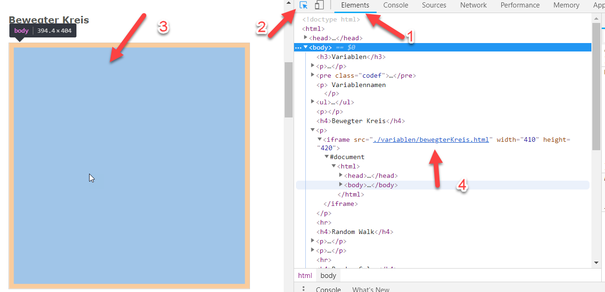
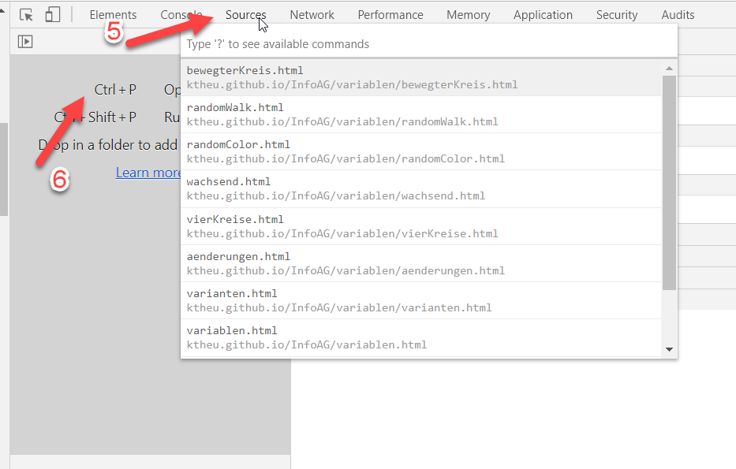

Um den Source Code eines Sketches anzuschauen, gehe wie folgt vor:


Die Vorlage in eine *.html - Datei kopieren, mit Notepad++ den Sketch editieren und dann mit Ausführen, Launch in Chrome das Ergebnis ansehen. Dies geht für Sketche ohne Bilder oder Sound. Nach jedem Edit in der html-Datei den Browser refreshen. Die Konsole erhält man in Chrome mit F12 oder Strg+Umschalt+i, Console.
<html>
<head>
<script src="https://cdnjs.cloudflare.com/ajax/libs/p5.js/0.7.2/p5.js"></script>
<script>
function setup() {
createCanvas(400,400);
fill(255);
background(0);
}
function draw() {
ellipse(mouseX,mouseY,30,30);
}
</script>
</head>
<body>
</body>
</html>